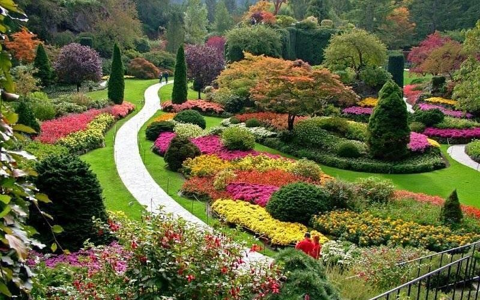
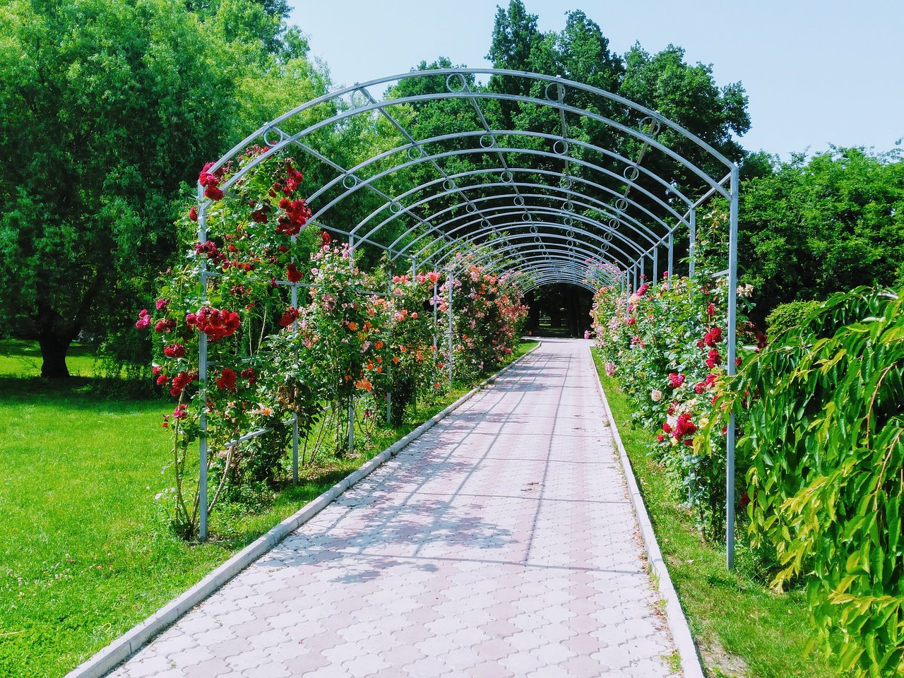
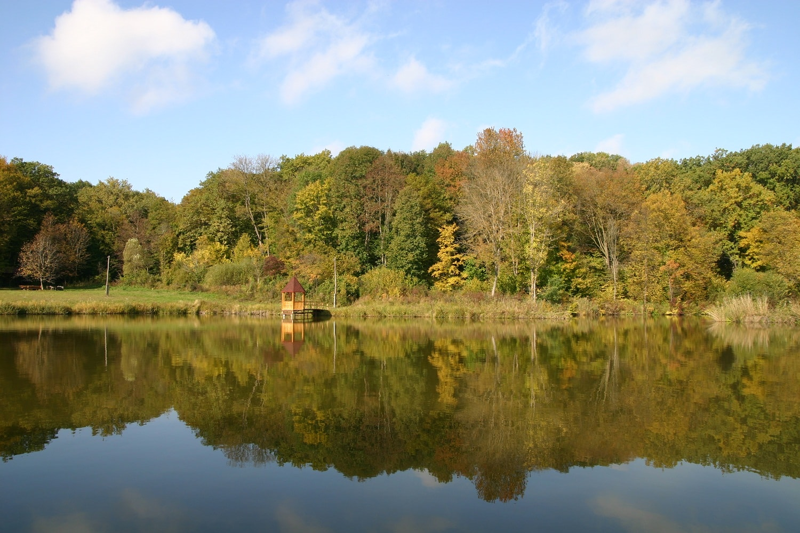
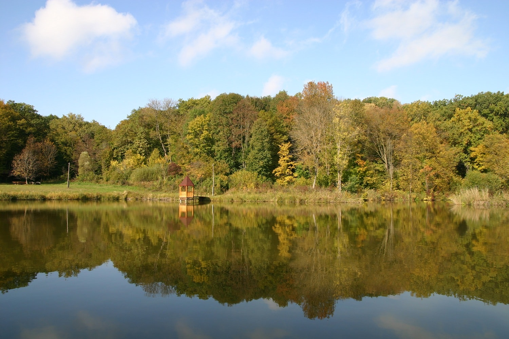

Parcuri și Natură
Relaxează-te în mijlocul naturii! Explorează cele mai frumoase parcuri și zone naturale din Moldova.
Parcul Dendrariu-Chișinău
O oază de verdeață și cercetare, întinsă pe 76 hectare, cu colecții unice de plante rare.
 Grădina Botanică din Chișinău
O oază de verdeață și cercetare, întinsă pe 76 hectare, cu colecții unice de plante rare.


Rezervația Codrii
Situată în inima Moldovei, oferă trasee ecoturistice, observarea faunei și vegetației, dar și vizite la mănăstirea Căpriana din apropiere.
 
 Lacul Valea Morilor
Cunoscut pentru promenadă, bărci, plajă și apusuri de neuitat, este un simbol al orașului Chișinău.


Valea Trandafirilor
Parc urban popular în partea sud-estică a Chișinăului, cu alei umbroase, lacuri, locuri de joacă și restaurante tradiționale.